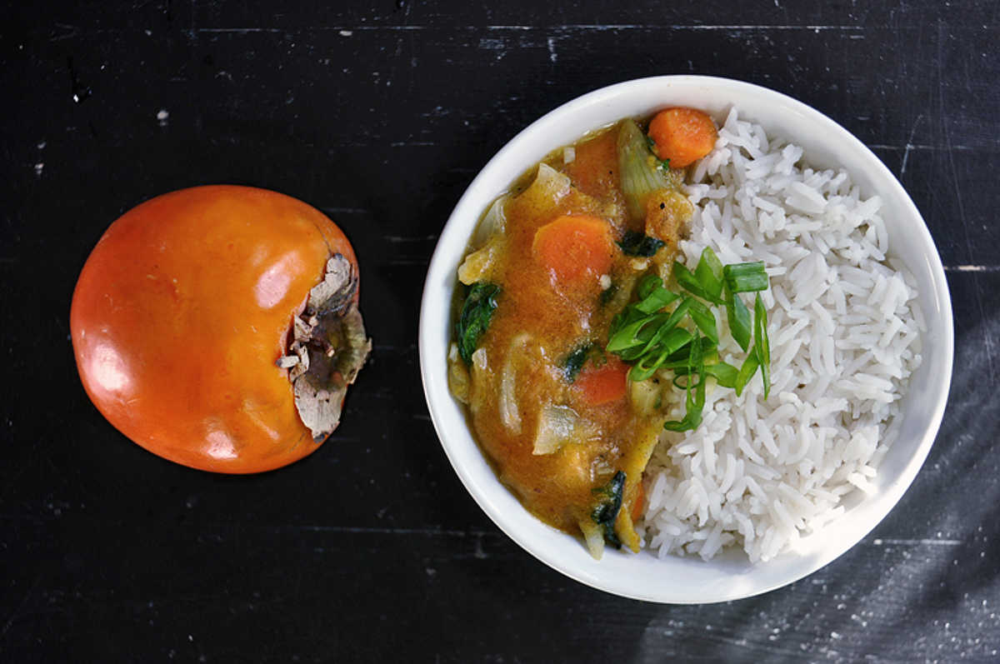

persimmon curry
2 servings — 30 minutes
I've been looking for ways to incorporate persimmon into savoury recipes. I always thought it could make a great sauce for pasta or rice meals. If puréed, it will taste very sweet, but if you mix in curry powder and other spices and ingredients it becomes less of a dessert.
Be careful when selecting your persimmon, there are two varieties. Hachiya persimmon are more elongated and you need to wait for it to soften down before attempting to eat it. Fuyu persimmon, have a tomato-like shape and you can eat it like an apple.
There are many different varieties of curry powders it's just a pre-mixed combination of different ground spices. If you're in a hurry, buying a mix is best. But if you have a full stocked spice rack, it may be better and more fun to do it yourself. Typically curry mixes have turmeric, coriander, cumin, black and red bell pepper, cinnamon cloves, fennel seeds, cardamom, ginger and fenugreek. There can be as much as 20 different spices, but you can probably omit a few and it'll still taste pretty great.
Enjoy over some basmasti rice.
 basmati rice 100 g
basmati rice 100 g water 180 ml
water 180 ml bay leaf 1
bay leaf 1
rice
- Rinse 100 g (1/2 cup) of basmati rice under cold water, transfer to pot.
- Boil some water, pour 180 ml of it over the rice. Bring pot to a boil. Add 1 bay leaf, lower heat and cover. Simmer for 15 minutes, remove from heat and let steam for an additional 5 minutes with the lid on.
- Remove bay leaf and serve.
 hachiya persimmon 2
hachiya persimmon 2 curry powder 15 g
curry powder 15 g ginger root 2.5 cm, minced
ginger root 2.5 cm, minced garlic 2 cloves
garlic 2 cloves carrots 2
carrots 2 salt 1.25 g
salt 1.25 g yellow onion 1
yellow onion 1 spinach 15 g
spinach 15 g
sauce
- Scoop the flesh out of 2 ripe hachiya persimmons, purée with a hand blender.
- Sauté 1 chopped yellow onion, 2 minced garlic cloves, 2.5 cm (1 inch) of minced ginger root with a bit of olive oil in a pan over medium heat. Cook until onions become translucent.
- Add 2 diced carrots,15 g (handful) of spinach. Stir for 2 minutes, then add 15 g (1 tbsp) of curry powder. Cook for an additional minute.
- Add puréed persimmon, cook for 5 minutes and then season with 1.25 ml (1/4 tsp) of salt. Serve over basmati rice.